Load Data and Libraries
beer=read.csv(file.choose())
breweries=read.csv(file.choose())
cities=read.csv(file.choose())
library(dplyr)
library(grid)
library(ggplot2)
library(tidyr)
library(maps)
library(usmap)
library(stringr)
library(class)
library(caret)
library(Hmisc)
library(gridExtra)
library(naniar)beerBrew=merge(beer,breweries,by.x="Brewery_id",by.y="Brew_ID")stateCoords=us_map()
# Remove Leading Spaces from State Column of merged Beer Brew Data frame (prepare for join)
# Summarise Each State's Number of Breweries and Beers
stateBrewBeer= beerBrew %>% mutate(State=gsub(" ","",State)) %>% group_by(State) %>% summarise(brews=length(unique(Brewery_id)),beers=n())
#Join Brewery Beer Data with a dataframe containing state coordinates and population
statePopBrBe = merge(statepop,stateBrewBeer,all.x=TRUE,by.y="State",by.x="abbr")
statePopBrBe=statePopBrBe %>% mutate(brewCap=brews/pop_2015,beerCap=beers/pop_2015)
plot_usmap(data=statePopBrBe,values="brews",labels = TRUE)+scale_fill_continuous(name="Number Breweries")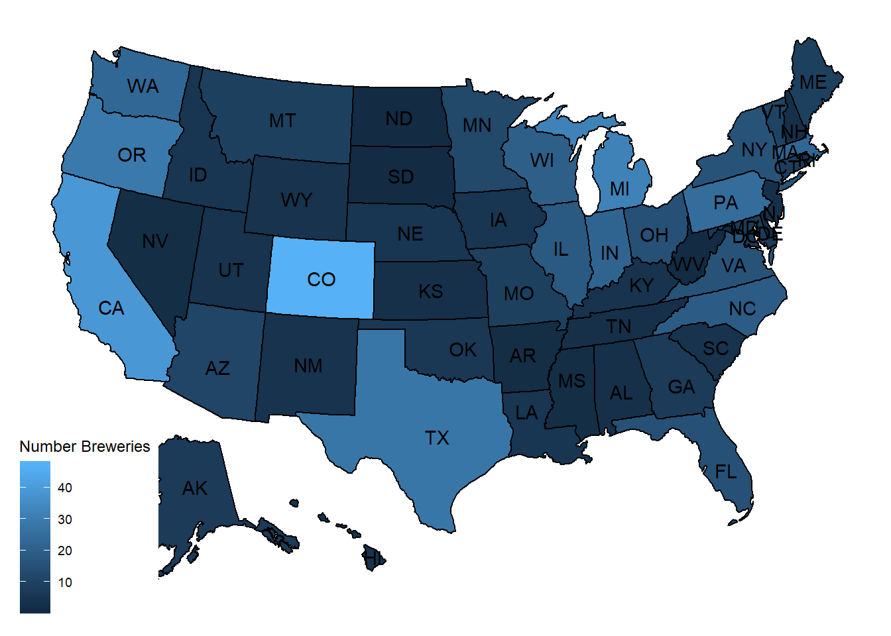 3. Address the missing values in each column.
# plot missing values in each column, rename some columns
gg_miss_var(beerBrew%>%rename(Beer_Name=Name.x,Brewery_Name=Name.y,Brewery_ID=Brewery_id)
%>%select(IBU,ABV,Style,State,Ounces,City,Brewery_Name,Beer_Name,
Brewery_ID,Beer_ID))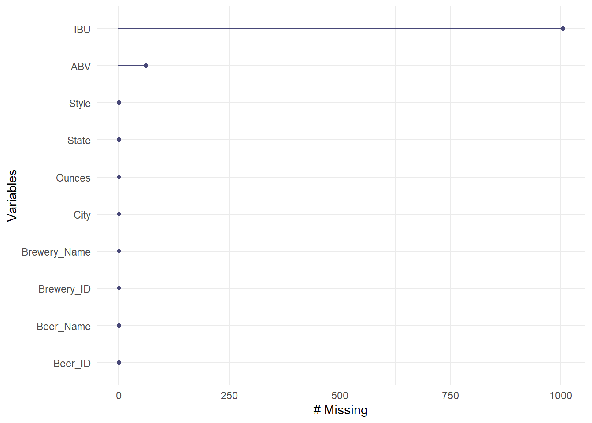
# convert empty string Styles to NAs to more easily see missings in all columns
beerBrew$Style[which(beerBrew$Style=="")]=NA
sapply(beerBrew, function(x) sum(is.na(x)))## Brewery_id Name.x Beer_ID ABV IBU Style Ounces Name.y City
## 0 0 0 62 1005 5 0 0 0
## State
## 04.Compute the median alcohol content and international bitterness unit for each state. Plot a bar chart to compare.
beerBrew %>% group_by(State) %>%
filter(!is.na(ABV))%>%
summarise(ABV=median(ABV)) %>%
ggplot(aes(x=reorder(State,-ABV),ABV)) +
geom_bar(stat="identity", position="dodge", color='skyblue',fill='steelblue') +
# scale_y_continuous(limits = c(0.5,0.07))+
#coord_flip()+
xlab("State") + ylab("ABV") + ggtitle("Median ABV by State") 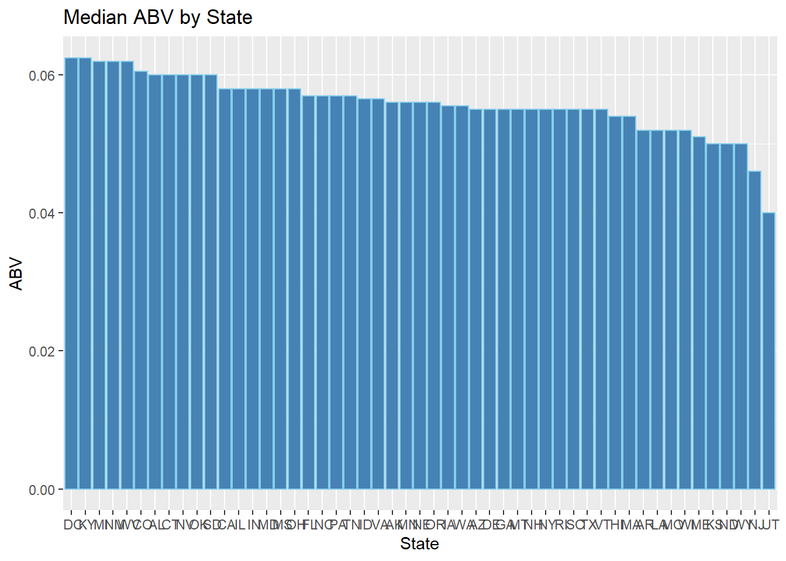
beerBrew %>% group_by(State) %>%
filter(!is.na(IBU))%>%
summarise(IBU=median(IBU)) %>%
ggplot(aes(x=reorder(State,-IBU),IBU)) +
geom_bar(stat="identity", position="dodge", color='skyblue',fill='steelblue') +
coord_flip()+
xlab("State") + ylab("IBU") + ggtitle("Median IBU by State")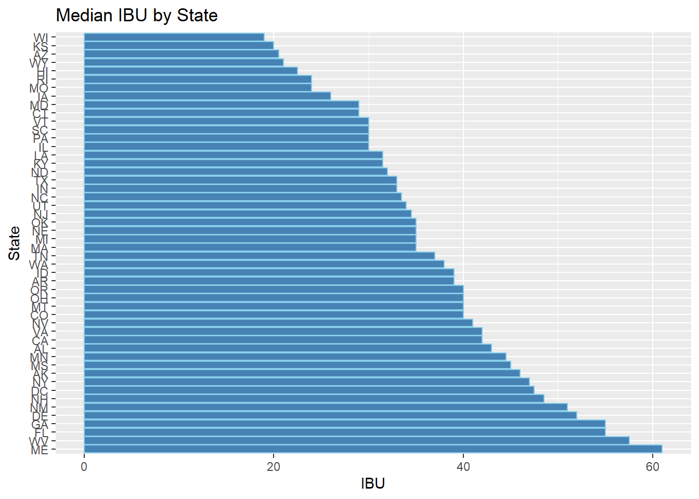
#find the single most ABV beer
beerBrew %>% filter(!is.na(ABV)) %>% mutate(maxABV=max(ABV)) %>%
filter(ABV==maxABV) %>%select(State,Name.x,Name.y,ABV)## State Name.x Name.y ABV
## 1 CO Lee Hill Series Vol. 5 - Belgian Style Quadrupel Ale Upslope Brewing Company 0.128#
#find the single most bitter beer
beerBrew %>% filter(!is.na(IBU)) %>% mutate(maxIBU=max(IBU)) %>%
filter(IBU==maxIBU)%>%select(State,Name.x,Name.y,IBU)## State Name.x Name.y IBU
## 1 OR Bitter Bitch Imperial IPA Astoria Brewing Company 1386.Comment on the summary statistics and distribution of the ABV variable The ABV is mostly normally distributed with a noticeable right tail. The mean is Larger than the median.
#Check for normality of ABV using qq plot and histogram
beerBrew %>% filter(!is.na(ABV)) %>% ggplot() +stat_qq(aes(sample=ABV)) 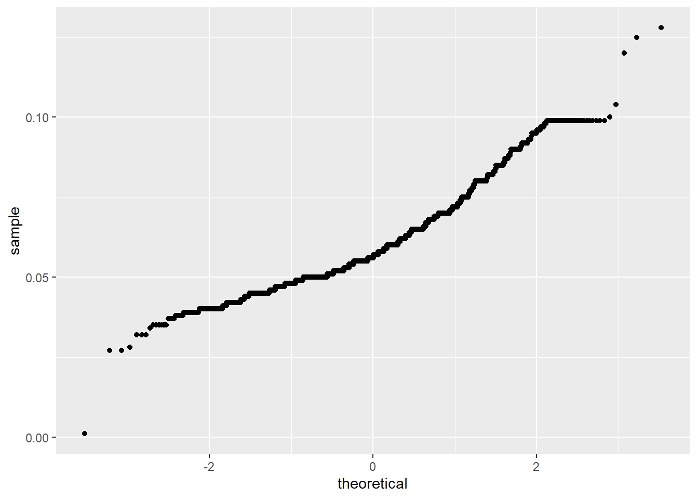
beerBrew %>% filter(!is.na(ABV)) %>% ggplot()+geom_histogram(aes(ABV))## `stat_bin()` using `bins = 30`. Pick better value with `binwidth`.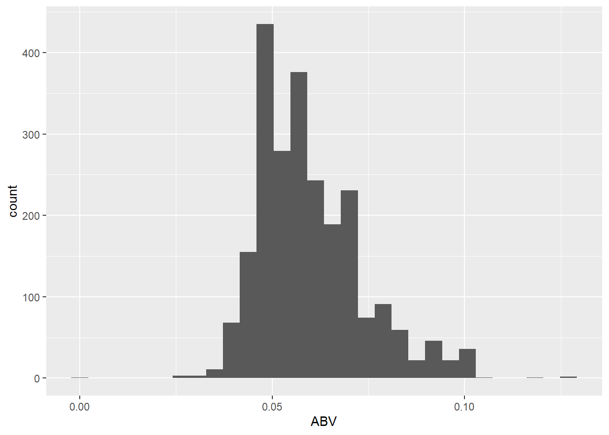
beerBrew %>% filter(!is.na(ABV)) %>% select(ABV)%>%summary()## ABV
## Min. :0.00100
## 1st Qu.:0.05000
## Median :0.05600
## Mean :0.05977
## 3rd Qu.:0.06700
## Max. :0.12800#Categorize the many styles into 5 groups
beerBrew$StyleCat= case_when(
grepl("(India Pale Ale|IPA)",beerBrew$Style) ~ "IPA",
grepl( "Ale",beerBrew$Style) ~ "Ale",
grepl("Lager",beerBrew$Style)~"Lager",
grepl("Stout",beerBrew$Style)~"Stout",
TRUE~"Other"
)beerBrew %>% filter(!is.na(ABV)&!is.na(IBU))%>%
ggplot(aes(ABV,IBU,color=StyleCat))+geom_point(position=position_jitter(width=0.01),alpha=0.5)+geom_smooth(method="lm",se=FALSE,size=2) +labs(title="Correlation between ABV and IBU") 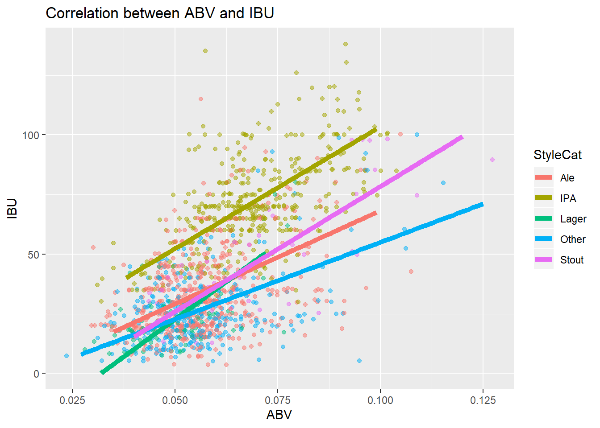
We address the feasability of using ABV and IBU to predict a Beer’s Style. We are creating a classifier object that will have an input of a list of ABV and IBU values. Its output will be a list of Beer Styles.
Prepare data set for KNN
# remove NAs in columns which will use for KNN
beerBrewClean=beerBrew %>% filter(!is.na(ABV)&!is.na(IBU)&!is.na(StyleCat))We randomly divide the dataset of Beers into two parts. One to train the classifier function on. Another to test how well the classifier can classify Beer Styles.
The Sensitivity represents the probability our classifier can classify an Ale when we present it with an Ale’s IBU and ABV Values. The Specificity represents the probability our classifier can classify an IPA when we present it with an IPA’s IBU and ABV values.
# Split percentage of train test
splitPerc=0.7
#Response Variable of KNN
response="StyleCat"
#data is just the merged Beer and Brewery dataframe without NAs and IPA,Ales only
data=beerBrewClean %>% filter(StyleCat %in% c("Ale","IPA"))
#column names of explanatory variables for KNN
explanatory=c("ABV","IBU")
iterations=100
#empty arrays to store Accuracy, Sensitivity and SPecificity of model performance
#with randomly shuffled train and tests
masterAcc=double(iterations)
masterSens=double(iterations)
masterSpec=double(iterations)
for( x in 1:iterations){
# remove NAs from necessary columns
# scale explanatories
data[,explanatory]=scale(data[,explanatory])
trainIndices = sample(1:dim(data)[1],round(splitPerc * dim(data)[1]))
train = data[trainIndices,]
test = data[-trainIndices,]
classifications=knn(train[,explanatory],test[,explanatory],train[,response],k=3)
CM = confusionMatrix(table(classifications,test[,response]))
masterAcc[x] = CM$overall[1]
masterSens[x]=CM$byClass[1]
masterSpec[x]=CM$byClass[2]
}
MeanAcc = mean(masterAcc)
MeanSens=mean(masterSens)
MeanSpec=mean(masterSpec)How do Ales and IPAs differ in terms of ABV and IBU? How much more alcoholic or bitter is one style over the other?
Visualize difference in IBU and ABV between Styles
beerBrewClean %>% filter(StyleCat %in% c("Ale","IPA")) %>% select(Beer_ID,ABV,IBU,StyleCat)%>%
gather("Variable","Value",c(-StyleCat,-Beer_ID))%>%
ggplot() + geom_boxplot(aes(StyleCat,Value)) + scale_x_discrete(name="Alcohol Style") +
labs(title="ABV and IBU Differences By Style") + facet_grid(Variable~.,scales = "free_y")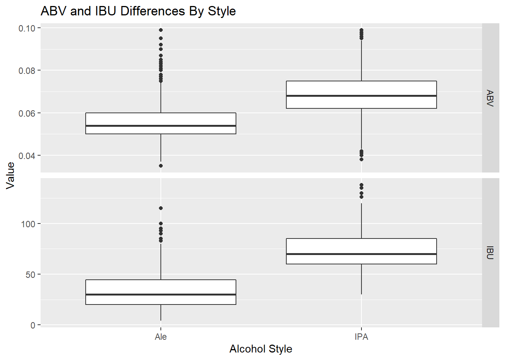
beerBrewClean %>% filter(StyleCat %in% c("Ale","IPA")) %>% ggplot(aes(color=StyleCat,ABV,IBU)) +
geom_point()+labs(title="IBU/ABV Ratio for Each Beer By Style")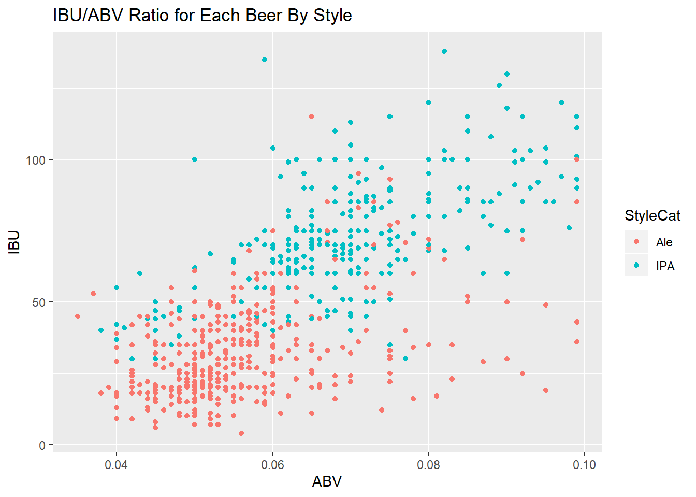
Testing for significant differences in ABV and IBU between IPA and Ales Check the data to see if ABV and IBU form bell curves. Bell Curve Distributions allow us to generalize our conclusions to loarger populations.
# Assumptions Central Limit Theorem can be invoked
normalityBeer= beerBrewClean %>% filter(StyleCat %in% c("Ale","IPA")) %>% ggplot()
#+ stat_qq(aes(sample=log(ABV)))
qqABV= beerBrewClean %>% filter(StyleCat %in% c("Ale","IPA")) %>% ggplot() +stat_qq(aes(sample=log(ABV)))+ylab("Log(ABV)")+labs(title="Log ABV Normality Check")+
theme(text = element_text(size=20))
beerBrewClean %>% filter(StyleCat %in% c("Ale","IPA")) %>% ggplot() + geom_histogram(aes(log(IBU)))+ labs(title="Distribution of Log IBU for Ales/ IPAs")## `stat_bin()` using `bins = 30`. Pick better value with `binwidth`.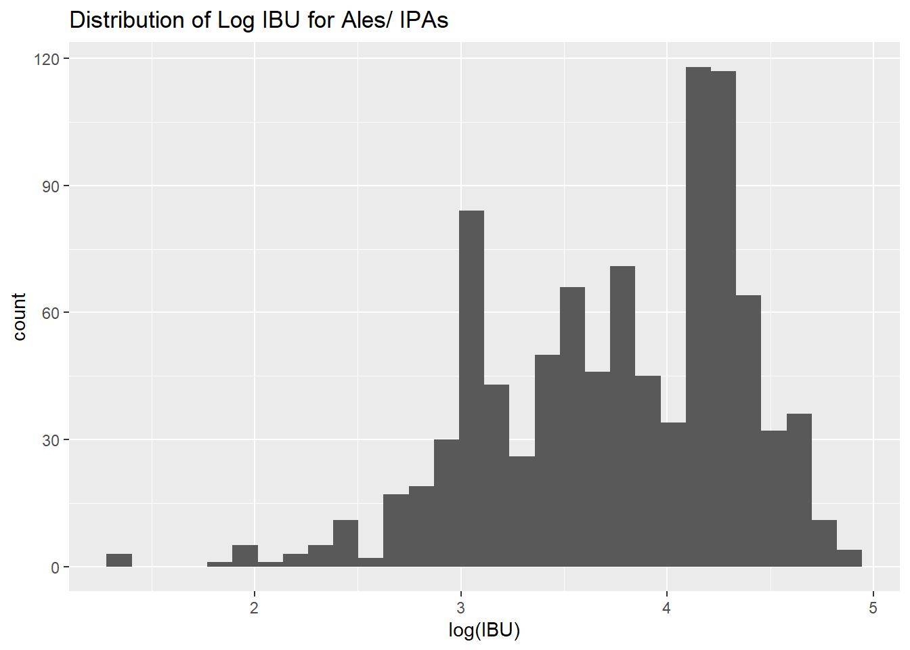
qqIBU=beerBrewClean %>% filter(StyleCat %in% c("Ale","IPA")) %>% ggplot() +
stat_qq(aes(sample=log(ABV)))+ylab("Log(IBU)")+labs(title="Log IBU Normality Check")+
theme(text = element_text(size=20))
qqABV=ggplot_gtable(ggplot_build(qqABV))
qqIBU=ggplot_gtable(ggplot_build(qqIBU))
maxWidth = unit.pmax(qqABV$heights[2:3], qqIBU$heights[2:3])
qqABV$heights[2:3] <- maxWidth
qqIBU$heights[2:3] <- maxWidth
grid.arrange(qqABV, qqIBU, heights = c(2, 2)) 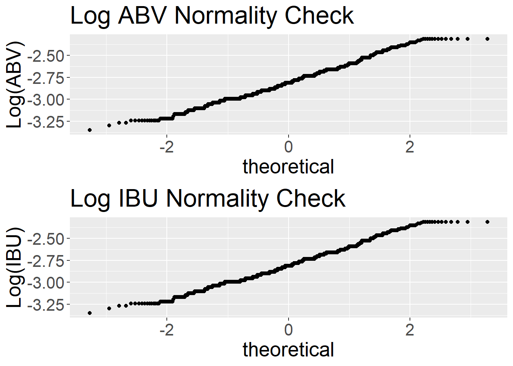
beerBrewClean %>% group_by(StyleCat) %>% summarise(sd=sd(ABV),sdIBU=sd(IBU))## # A tibble: 5 x 3
## StyleCat sd sdIBU
## <chr> <dbl> <dbl>
## 1 Ale 0.0111 18.0
## 2 IPA 0.0122 19.5
## 3 Lager 0.00711 13.4
## 4 Other 0.0130 15.9
## 5 Stout 0.0186 24.1histABV= normalityBeer + geom_histogram(aes(log(ABV)))
histIBU=normalityBeer + geom_histogram(aes(log(IBU)))
histABV=ggplot_gtable(ggplot_build(histABV))## `stat_bin()` using `bins = 30`. Pick better value with `binwidth`.histIBU=ggplot_gtable(ggplot_build(histIBU))## `stat_bin()` using `bins = 30`. Pick better value with `binwidth`.maxWidth = unit.pmax(histABV$heights[2:3], histIBU$heights[2:3])
histABV$heights[2:3] <- maxWidth
histIBU$heights[2:3] <- maxWidth
grid.arrange(histABV, histIBU, heights = c(2, 2),ncol=2)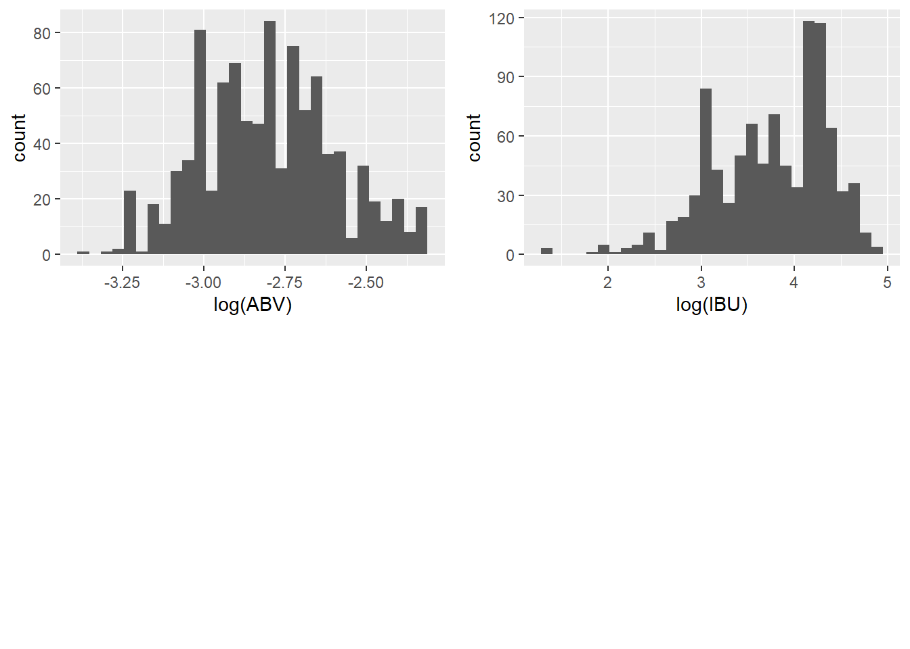
beerBrewClean %>% filter(StyleCat %in% c("Ale","IPA")) %>%
select(Beer_ID,ABV,IBU)%>%
gather( "Variable", "Values", -Beer_ID)%>%
ggplot() + geom_histogram(aes(Values)) + facet_grid(~Variable,scales = "free_x") +
theme(text = element_text(size=20))## `stat_bin()` using `bins = 30`. Pick better value with `binwidth`.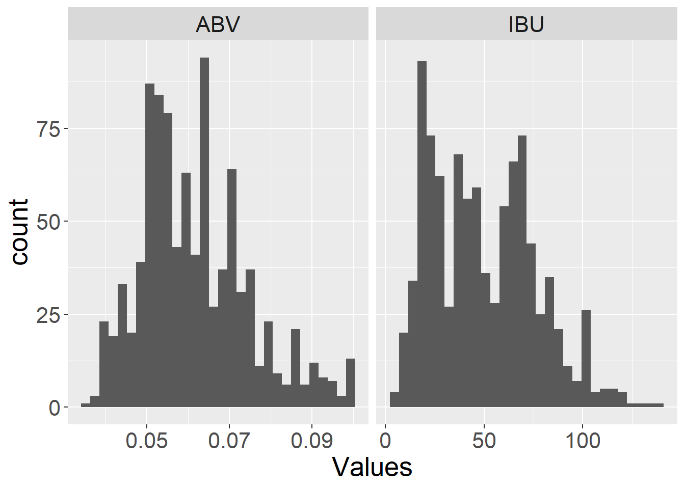
ABUtest=t.test(log(ABV)~StyleCat,var.equal=TRUE,beerBrewClean %>% filter(StyleCat %in% c("Ale","IPA") & !is.na(ABV)) %>% mutate(ibuABV=IBU/ABV) )
ibuTest=t.test(log(IBU)~StyleCat,var.equal=TRUE,beerBrewClean %>% filter(StyleCat %in% c("Ale","IPA") & !is.na(IBU)) %>% mutate(ibuABV=IBU/ABV) )In terms of ABV, median of IPA compared to median of Ales is a ratio ranging between
exp(ABUtest$conf.int)## [1] 0.7976278 0.8361243
## attr(,"conf.level")
## [1] 0.95In terms of IBU, median of IPA compared to median of Ales is a ratio ranging between
exp(ibuTest$conf.int)## [1] 0.4079911 0.4585913
## attr(,"conf.level")
## [1] 0.95Test set is the records of missing IBUs Train set is the records that have IBU not missing
1.Find the national percentages of each Style Category visually
#national percentage of styles
beerBrew %>% ggplot() + stat_summary(geom="bar",aes(StyleCat,Beer_ID),fun.y=function(x){
length(unique(x))/length(unique(beerBrew$Beer_ID))
})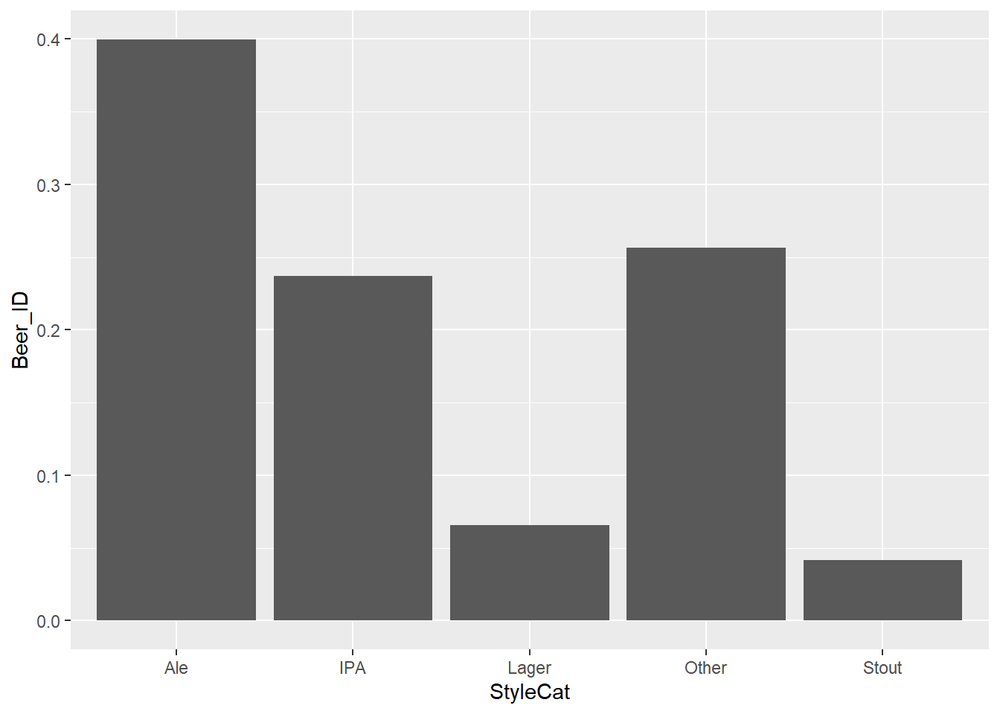 2. Table Format of national percentages
nationalPct=beerBrew %>% group_by(StyleCat) %>% summarise(pct=n()/with(beerBrew,length(unique(Beer_ID))))#remove the leading space in all States of beerBrew
beerBrew$State = with(beerBrew, gsub(as.character(State),pattern=" ",replacement = ""))
beerBrew$City=as.character(beerBrew$City)
cities$City= with(cities,as.character(City))
cities$State=with(cities,as.character(State))
#change State abbreviation to full name
States=map_data("state")
lookup = data.frame(abb = state.abb, State = state.name)
lookup$abb=as.character(lookup$abb)
lookup$State=as.character(lookup$State)
lookup=rbind(lookup,c("DC","district of columbia"))
# turn abbreviations to state names for beerBrew because cities has full names
beerBrew=merge(beerBrew,lookup,all.x=TRUE,by.x="State",by.y="abb")
#remove leading blanks in cities State field
cities$State = str_remove(cities$State,"^\\s")
# FINALLY
beerBrewCities = left_join(beerBrew, cities, by=c("City"="City","State.y"="State"))convert population data string to number
beerBrewCities$X2018 = with(beerBrewCities,as.numeric(str_replace(as.character(X2018),",","")))## Warning in eval(substitute(expr), data, enclos = parent.frame()): NAs introduced by coercionbeerBrewCities$X2010 = with(beerBrewCities,as.numeric(str_replace(as.character(X2010),",","")))## Warning in eval(substitute(expr), data, enclos = parent.frame()): NAs introduced by coercion#write.csv( beerBrewCities %>% arrange(desc(X2018)) %>% head(),"BeerLeftCityState.csv" ) stylePctByState=beerBrew %>% group_by(State,City) %>%
#find the total number of beers for each city without aggregating
mutate(nBeers=length(unique(Beer_ID))) %>%
ungroup()%>%
#find the total number of beers for each city,style combination
group_by(State,City,StyleCat) %>% summarise(nBeersPerStylePerCity=
length(unique(Beer_ID)),nBeers=
mean(nBeers)) %>%
#divide the number of Lagers in Minneapolis by the number of beers in minneapolis
mutate(stylePct=nBeersPerStylePerCity/nBeers)%>% arrange(desc(stylePct)) %>%
ungroup()%>%
#find the average and standard deviation of all the cities' percentages of Lager,Ale,etc.
group_by(StyleCat) %>%
summarise(meanPct=mean(stylePct),sdPct=sd(stylePct))
stylePctByState## # A tibble: 5 x 3
## StyleCat meanPct sdPct
## <chr> <dbl> <dbl>
## 1 Ale 0.522 0.248
## 2 IPA 0.374 0.226
## 3 Lager 0.351 0.333
## 4 Other 0.401 0.236
## 5 Stout 0.194 0.173stylePctByState %>% ggplot() + geom_point(aes(StyleCat,meanPct),size=10)+geom_errorbar(aes(
x=StyleCat,ymin= meanPct-sdPct,ymax=meanPct+sdPct
))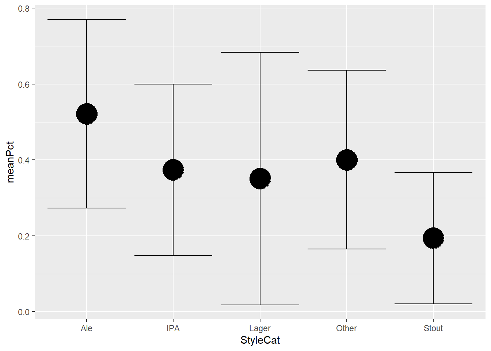 In order to compare each city’s style percentage to the national percentage for each style. We need to find the percentage of each style in each city.
targetCities = beerBrewCities %>% group_by(State,City) %>%
#find the number of breweries per capita to be used as measure of underserved cities
mutate(brewPcap=length(unique(Brewery_id))/
mean(X2018),nBeers=length(unique(Beer_ID)),X2018=mean(X2018)) %>%
#find the number of beers in each city and the population in each city
#arrange(desc(brewPcap)) %>%
ungroup() %>%
#find the number of beers for each particulr style in each city
group_by(State,City,StyleCat) %>% summarise(nBeersPerStylePerCity=
length(unique(Beer_ID)),nBeers=
mean(nBeers),brewPcap=mean(brewPcap),X2018=mean(X2018)) %>%
mutate(stylePct=nBeersPerStylePerCity/nBeers) #%>% ungroup() %>%
#top_n(10,brewPcap)
head(targetCities,10)## # A tibble: 10 x 8
## # Groups: State, City [4]
## State City StyleCat nBeersPerStylePerCity nBeers brewPcap X2018 stylePct
## <chr> <chr> <chr> <int> <dbl> <dbl> <dbl> <dbl>
## 1 AK Anchorage Ale 7 15 0.0000137 291538 0.467
## 2 AK Anchorage IPA 5 15 0.0000137 291538 0.333
## 3 AK Anchorage Other 3 15 0.0000137 291538 0.2
## 4 AK Juneau Ale 1 2 NA NA 0.5
## 5 AK Juneau Other 1 2 NA NA 0.5
## 6 AK Soldotna Ale 3 4 NA NA 0.75
## 7 AK Soldotna IPA 1 4 NA NA 0.25
## 8 AK Talkeetna Ale 2 4 NA NA 0.5
## 9 AK Talkeetna IPA 1 4 NA NA 0.25
## 10 AK Talkeetna Stout 1 4 NA NA 0.25Cities that are missing a style do not have observations for that style. Add observations containing 0% for cities that have no beers for a certain style.
#create a subset of the cities and style percentages data to test a function
# that will add observations containing 0% for cities that ar emissing styles
small = targetCities %>% ungroup() %>% top_n(10,brewPcap)
#juust right join the greenbay
small= small[small$City=="Green Bay",]
missingStyle0 = function(small,a)
{
#right join the complete list of styles to each city's data to create NAs for
#missing styles
smallCat= small %>% merge(stylePctByState,all.y=TRUE)
# find the rows that are missing and put 0% for the style percentage
naIndices=which(is.na(smallCat$City))
smallCat$stylePct[naIndices]=0
# for the rest of the rows, copy the information from the non-NA rows
smallCat$State[naIndices]=max(smallCat$State[-naIndices])
smallCat$City[naIndices]=max(smallCat$City[-naIndices])
smallCat$brewPcap[naIndices]=max(smallCat$brewPcap[-naIndices])
smallCat$X2018[naIndices]=max(smallCat$X2018[-naIndices])
return(smallCat)
}
missingStyle0(small)## StyleCat State City nBeersPerStylePerCity nBeers brewPcap X2018 stylePct meanPct sdPct
## 1 Ale WI Green Bay 1 2 1.906959e-05 104879 0.5 0.5219114 0.2484043
## 2 IPA WI Green Bay 1 2 1.906959e-05 104879 0.5 0.3739356 0.2257477
## 3 Lager WI Green Bay NA NA 1.906959e-05 104879 0.0 0.3507032 0.3334354
## 4 Other WI Green Bay NA NA 1.906959e-05 104879 0.0 0.4007520 0.2357859
## 5 Stout WI Green Bay NA NA 1.906959e-05 104879 0.0 0.1938534 0.1731264test=targetCities %>% ungroup() %>% top_n(10,brewPcap)
# apply this function tothe test dataframe, check to see if missing styles has 0s as style%
test %>% group_by(State,City) %>% do(missingStyle0(.,1))## Warning in max(smallCat$State[-naIndices]): no non-missing arguments, returning NA## Warning in max(smallCat$City[-naIndices]): no non-missing arguments, returning NA## Warning in max(smallCat$brewPcap[-naIndices]): no non-missing arguments to max; returning -Inf## Warning in max(smallCat$X2018[-naIndices]): no non-missing arguments to max; returning -Inf## # A tibble: 15 x 10
## # Groups: State, City [3]
## StyleCat State City nBeersPerStylePerCity nBeers brewPcap X2018 stylePct meanPct sdPct
## <chr> <chr> <chr> <int> <dbl> <dbl> <dbl> <dbl> <dbl> <dbl>
## 1 Ale CA Temecula 2 5 0.0000174 114742 0.4 0.522 0.248
## 2 IPA CA Temecula 1 5 0.0000174 114742 0.2 0.374 0.226
## 3 Lager CA Temecula NA NA 0.0000174 114742 0 0.351 0.333
## 4 Other CA Temecula 2 5 0.0000174 114742 0.4 0.401 0.236
## 5 Stout CA Temecula NA NA 0.0000174 114742 0 0.194 0.173
## 6 Ale CO Boulder 17 41 0.0000838 107353 0.415 0.522 0.248
## 7 IPA CO Boulder 8 41 0.0000838 107353 0.195 0.374 0.226
## 8 Lager CO Boulder 2 41 0.0000838 107353 0.0488 0.351 0.333
## 9 Other CO Boulder 11 41 0.0000838 107353 0.268 0.401 0.236
## 10 Stout CO Boulder 3 41 0.0000838 107353 0.0732 0.194 0.173
## 11 Ale WI Green Bay 1 2 0.0000191 104879 0.5 0.522 0.248
## 12 IPA WI Green Bay 1 2 0.0000191 104879 0.5 0.374 0.226
## 13 Lager WI Green Bay NA NA 0.0000191 104879 0 0.351 0.333
## 14 Other WI Green Bay NA NA 0.0000191 104879 0 0.401 0.236
## 15 Stout WI Green Bay NA NA 0.0000191 104879 0 0.194 0.173# all other NAs will match the previous column dataFor states with missing styleCats add rows with the missing style and 0% as the style percent
targets0= targetCities %>% group_by(State,City) %>% do(missingStyle0(.,1))## Warning in max(smallCat$State[-naIndices]): no non-missing arguments, returning NA## Warning in max(smallCat$City[-naIndices]): no non-missing arguments, returning NA## Warning in max(smallCat$brewPcap[-naIndices]): no non-missing arguments to max; returning -Inf## Warning in max(smallCat$X2018[-naIndices]): no non-missing arguments to max; returning -Inf## Warning in max(smallCat$State[-naIndices]): no non-missing arguments, returning NA## Warning in max(smallCat$City[-naIndices]): no non-missing arguments, returning NA## Warning in max(smallCat$brewPcap[-naIndices]): no non-missing arguments to max; returning -Inf## Warning in max(smallCat$X2018[-naIndices]): no non-missing arguments to max; returning -Inf## Warning in max(smallCat$State[-naIndices]): no non-missing arguments, returning NA## Warning in max(smallCat$City[-naIndices]): no non-missing arguments, returning NA## Warning in max(smallCat$brewPcap[-naIndices]): no non-missing arguments to max; returning -Inf## Warning in max(smallCat$X2018[-naIndices]): no non-missing arguments to max; returning -Inf## Warning in max(smallCat$State[-naIndices]): no non-missing arguments, returning NA## Warning in max(smallCat$City[-naIndices]): no non-missing arguments, returning NA## Warning in max(smallCat$brewPcap[-naIndices]): no non-missing arguments to max; returning -Inf## Warning in max(smallCat$X2018[-naIndices]): no non-missing arguments to max; returning -Inf## Warning in max(smallCat$State[-naIndices]): no non-missing arguments, returning NA## Warning in max(smallCat$City[-naIndices]): no non-missing arguments, returning NA## Warning in max(smallCat$brewPcap[-naIndices]): no non-missing arguments to max; returning -Inf## Warning in max(smallCat$X2018[-naIndices]): no non-missing arguments to max; returning -Inf## Warning in max(smallCat$State[-naIndices]): no non-missing arguments, returning NA## Warning in max(smallCat$City[-naIndices]): no non-missing arguments, returning NA## Warning in max(smallCat$brewPcap[-naIndices]): no non-missing arguments to max; returning -Inf## Warning in max(smallCat$X2018[-naIndices]): no non-missing arguments to max; returning -Inf## Warning in max(smallCat$State[-naIndices]): no non-missing arguments, returning NA## Warning in max(smallCat$City[-naIndices]): no non-missing arguments, returning NA## Warning in max(smallCat$brewPcap[-naIndices]): no non-missing arguments to max; returning -Inf## Warning in max(smallCat$X2018[-naIndices]): no non-missing arguments to max; returning -Inf## Warning in max(smallCat$State[-naIndices]): no non-missing arguments, returning NA## Warning in max(smallCat$City[-naIndices]): no non-missing arguments, returning NA## Warning in max(smallCat$brewPcap[-naIndices]): no non-missing arguments to max; returning -Inf## Warning in max(smallCat$X2018[-naIndices]): no non-missing arguments to max; returning -Inf## Warning in max(smallCat$State[-naIndices]): no non-missing arguments, returning NA## Warning in max(smallCat$City[-naIndices]): no non-missing arguments, returning NA## Warning in max(smallCat$brewPcap[-naIndices]): no non-missing arguments to max; returning -Inf## Warning in max(smallCat$X2018[-naIndices]): no non-missing arguments to max; returning -Inf## Warning in max(smallCat$State[-naIndices]): no non-missing arguments, returning NA## Warning in max(smallCat$City[-naIndices]): no non-missing arguments, returning NA## Warning in max(smallCat$brewPcap[-naIndices]): no non-missing arguments to max; returning -Inf## Warning in max(smallCat$X2018[-naIndices]): no non-missing arguments to max; returning -Inf## Warning in max(smallCat$State[-naIndices]): no non-missing arguments, returning NA## Warning in max(smallCat$City[-naIndices]): no non-missing arguments, returning NA## Warning in max(smallCat$brewPcap[-naIndices]): no non-missing arguments to max; returning -Inf## Warning in max(smallCat$X2018[-naIndices]): no non-missing arguments to max; returning -Inf## Warning in max(smallCat$State[-naIndices]): no non-missing arguments, returning NA## Warning in max(smallCat$City[-naIndices]): no non-missing arguments, returning NA## Warning in max(smallCat$brewPcap[-naIndices]): no non-missing arguments to max; returning -Inf## Warning in max(smallCat$X2018[-naIndices]): no non-missing arguments to max; returning -Inf## Warning in max(smallCat$State[-naIndices]): no non-missing arguments, returning NA## Warning in max(smallCat$City[-naIndices]): no non-missing arguments, returning NA## Warning in max(smallCat$brewPcap[-naIndices]): no non-missing arguments to max; returning -Inf## Warning in max(smallCat$X2018[-naIndices]): no non-missing arguments to max; returning -Inf## Warning in max(smallCat$State[-naIndices]): no non-missing arguments, returning NA## Warning in max(smallCat$City[-naIndices]): no non-missing arguments, returning NA## Warning in max(smallCat$brewPcap[-naIndices]): no non-missing arguments to max; returning -Inf## Warning in max(smallCat$X2018[-naIndices]): no non-missing arguments to max; returning -Inf## Warning in max(smallCat$State[-naIndices]): no non-missing arguments, returning NA## Warning in max(smallCat$City[-naIndices]): no non-missing arguments, returning NA## Warning in max(smallCat$brewPcap[-naIndices]): no non-missing arguments to max; returning -Inf## Warning in max(smallCat$X2018[-naIndices]): no non-missing arguments to max; returning -Inf## Warning in max(smallCat$State[-naIndices]): no non-missing arguments, returning NA## Warning in max(smallCat$City[-naIndices]): no non-missing arguments, returning NA## Warning in max(smallCat$brewPcap[-naIndices]): no non-missing arguments to max; returning -Inf## Warning in max(smallCat$X2018[-naIndices]): no non-missing arguments to max; returning -Inf## Warning in max(smallCat$State[-naIndices]): no non-missing arguments, returning NA## Warning in max(smallCat$City[-naIndices]): no non-missing arguments, returning NA## Warning in max(smallCat$brewPcap[-naIndices]): no non-missing arguments to max; returning -Inf## Warning in max(smallCat$X2018[-naIndices]): no non-missing arguments to max; returning -Inf## Warning in max(smallCat$State[-naIndices]): no non-missing arguments, returning NA## Warning in max(smallCat$City[-naIndices]): no non-missing arguments, returning NA## Warning in max(smallCat$brewPcap[-naIndices]): no non-missing arguments to max; returning -Inf## Warning in max(smallCat$X2018[-naIndices]): no non-missing arguments to max; returning -Inf## Warning in max(smallCat$State[-naIndices]): no non-missing arguments, returning NA## Warning in max(smallCat$City[-naIndices]): no non-missing arguments, returning NA## Warning in max(smallCat$brewPcap[-naIndices]): no non-missing arguments to max; returning -Inf## Warning in max(smallCat$X2018[-naIndices]): no non-missing arguments to max; returning -Inf#check all cities have 5 styles regardless of if they made any beer with that style
with(targetCities,length(unique(City)))*5## [1] 1920head(targets0)## # A tibble: 6 x 10
## # Groups: State, City [2]
## StyleCat State City nBeersPerStylePerCity nBeers brewPcap X2018 stylePct meanPct sdPct
## <chr> <chr> <chr> <int> <dbl> <dbl> <dbl> <dbl> <dbl> <dbl>
## 1 Ale AK Anchorage 7 15 0.0000137 291538 0.467 0.522 0.248
## 2 IPA AK Anchorage 5 15 0.0000137 291538 0.333 0.374 0.226
## 3 Lager AK Anchorage NA NA 0.0000137 291538 0 0.351 0.333
## 4 Other AK Anchorage 3 15 0.0000137 291538 0.2 0.401 0.236
## 5 Stout AK Anchorage NA NA 0.0000137 291538 0 0.194 0.173
## 6 Ale AK Juneau 1 2 NA NA 0.5 0.522 0.248Find the underserved cities which are defined as cities with the lowest breweries per capita.
filterCity=targets0 %>%
ungroup()%>%
top_n(-25,brewPcap)
filterCity## # A tibble: 25 x 10
## StyleCat State City nBeersPerStylePerCity nBeers brewPcap X2018 stylePct meanPct sdPct
## <chr> <chr> <chr> <int> <dbl> <dbl> <dbl> <dbl> <dbl> <dbl>
## 1 Ale CA Sacramento 4 5 0.00000197 508529 0.8 0.522 0.248
## 2 IPA CA Sacramento NA NA 0.00000197 508529 0 0.374 0.226
## 3 Lager CA Sacramento 1 5 0.00000197 508529 0.2 0.351 0.333
## 4 Other CA Sacramento NA NA 0.00000197 508529 0 0.401 0.236
## 5 Stout CA Sacramento NA NA 0.00000197 508529 0 0.194 0.173
## 6 Ale MI Detroit 1 6 0.00000149 672662 0.167 0.522 0.248
## 7 IPA MI Detroit 2 6 0.00000149 672662 0.333 0.374 0.226
## 8 Lager MI Detroit 1 6 0.00000149 672662 0.167 0.351 0.333
## 9 Other MI Detroit 2 6 0.00000149 672662 0.333 0.401 0.236
## 10 Stout MI Detroit NA NA 0.00000149 672662 0 0.194 0.173
## # ... with 15 more rowsWhich of the underserved cities have style percentages that are less than a standard deviation under the national percentage? From the chart below, we should prioritize in the following order: producing Ale in Kansas City and Detroit, “Other” in Sacremento, Kansas City and Nashville, IPA in Sacremento and Nashville,Lager in Memphis, Nashbille and Kansas City, Stout in all the 5 cities.
ggplot(filterCity,aes(x=StyleCat)) + geom_point(aes(y=stylePct,col=City),size=3,position=position_jitter(width=0.2))+
geom_point(aes(StyleCat,meanPct),size=1,data=stylePctByState)+geom_errorbar(aes(
x=StyleCat,ymin= meanPct-sdPct,ymax=meanPct+sdPct
),data=stylePctByState)+ylab("Average Percentage of Style in a City")+
xlab("Beer Style")+labs(title="Which Beer Style should we sell to which city?")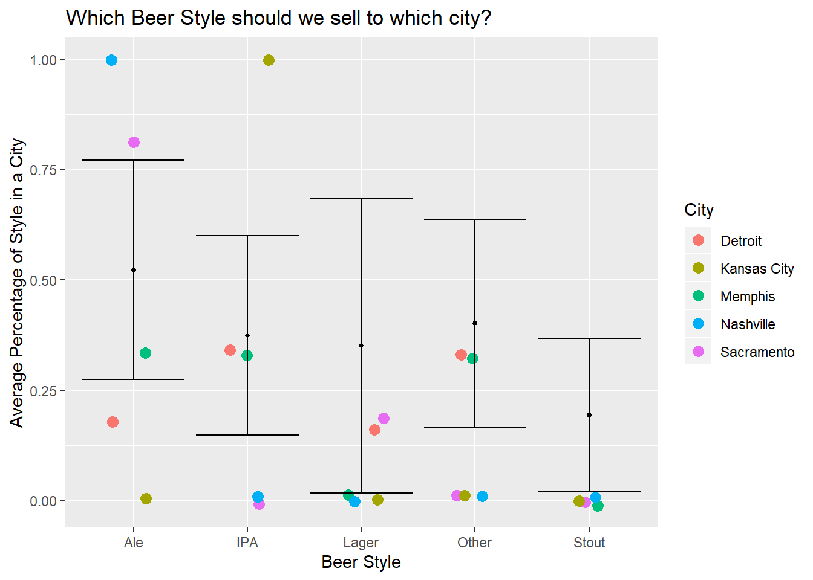
library(plotly) brewhist= ggplot(targetCities,aes(log(brewPcap),text=City)) + geom_histogram(bins=60) ggplotly(brewhist)